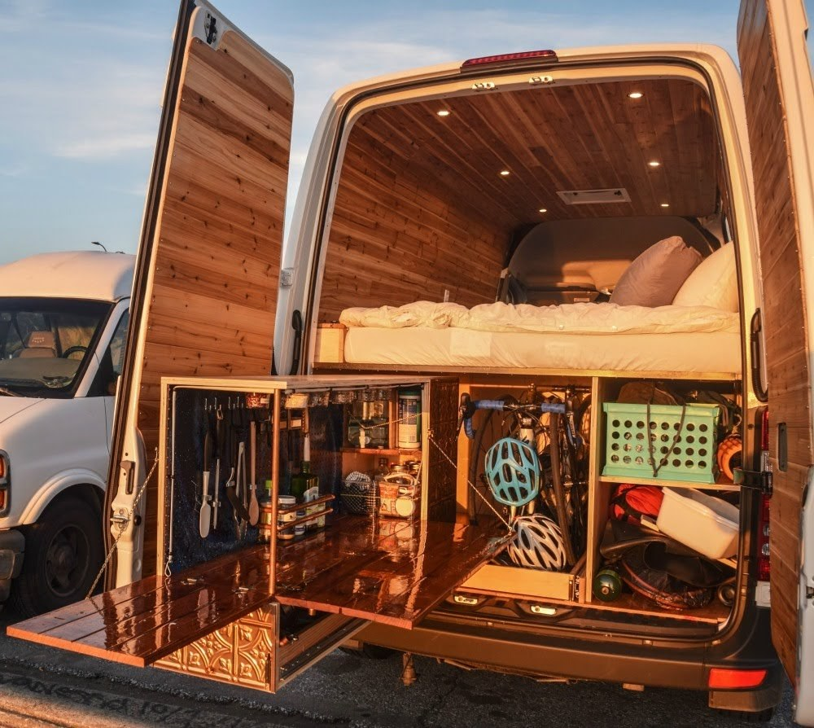
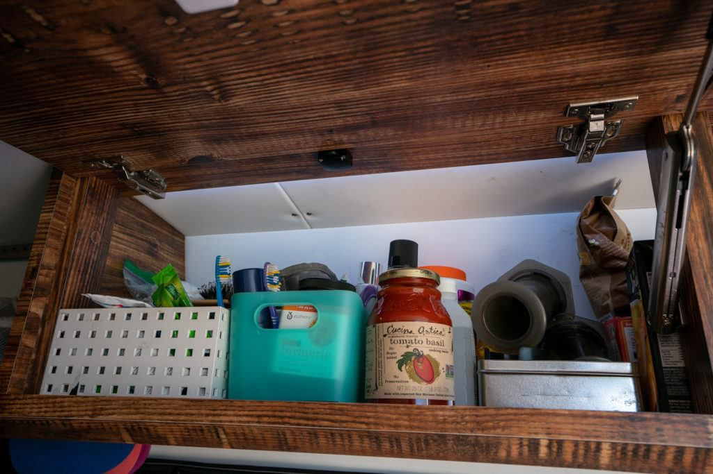

STORAGE OPTIONS - YOU HAVE SO MUCH SPACE - JUST USE IT RIGHT!
When living in a space as tiny as a campervan, proper storage is a must! There are a lot of creative ways out there to keep your van living space more organized. We’ve pulled together a collection of ideas to make the most of your storage space and added a few tips as well.
One thing we often hear people complain about is items sliding around inside of their large cabinets. By using multiple smaller bins you’re going to reduce the road noise and keep things more organized.